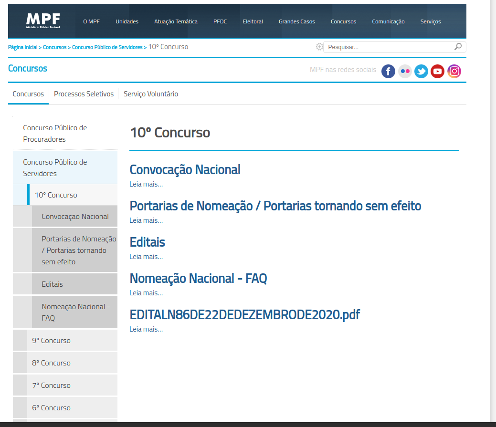

Teste de usabilidade
Obtenção de informações gerais
Objetivo
O Teste de Usabilidade tem por objetivo verificar a facilidade que o software ou site possui de ser claramente compreendido e manipulado pelo usuário, através dessa técnica contextualizamos uma situação que uma Persona tenta realizar uma tarefa dentro do site do Ministério Público.
Preparação
A tarefa principal que a Persona: Alexandre Gomez deverá realizar é buscar informações sobre o andamento de concursos para estagiários e para servidodes dentro do site do MPU:
| Impressões do participante |
|---|
| Como você avalia a facilidade de distinguir os elementos do site? |
| Os ícones do site te auxiliaram na hora de encontrar o que desejava? |
| O design do site te agrada? |
| O que te ajudou/atrapalhou mais na realização da tarefa? |
Participante
O participante tem 20 anos, é um estudante universitário pelo Centro Universitário de Brasília (CEUB), do curso de fisioterapia, ele tem que dividir seu tempo entre seus estudos e seus projetos que participa na faculdade.
Possui um conhecimento geral de acesso a sites.
Materiais
Os materiais utilizados na avaliação foram:
- Computador com acesso à internet
- Teclado/Mouse no padrão brasileiro
- Monitor de computador
- O site do Ministério Público da União aberto em tela cheia
- Cadeira que permite ajuste para uma boa vizualização da tela
- Cronômetro para calcular o tempo de cada ação
Teste piloto
O teste piloto é realizado de forma que os materiais e o site fossem disponibilizados e permitissem avançar a avaliação com a participante.
O resultado foi satisfatório, a ação pode ser realizada sem interrupções por parte dos equipamentos e do software.
Coleta de dados
A participante foi orientada a sentar-se e foi informada da tarefa a ser realizada, dado um momento de início e iniciado o cronômetro de modo que a participante fosse autorizada a iniciar sua ação.
O quadro abaixo dispõe os pontos principais da execução da tarefa:
| Descrição da ação | Tempo em segundos |
|---|---|
| Acessar o mouse com a mão | 1.5 |
| Observar a página | 4.5 |
| Posicionar o cursor ao menu lateral | 2.7 |
| Posicionar o curso até imagem(1) | 4.1 |
| Navegar até Documentos e Publicações | 2.1 |
| Reconhecer os itens | 9.3 |
| Ler as tabelas de Portaria conjunta | 8.6 |
| Posicionar o cursor à imagem(2) | 19.0 |
| Posicionar o curso à imagem(3) | 7.0 |
| Navegar até Anexo IV - Remuneração de Cargos em Comissão e Função de Confiança | 1.8 |
| Clicar em Anexo IV - Remuneração de Cargos em Comissão e Função de Confiança | 2.5 |
| Total | 68.1 |

Imagem 1 - Home do site

Imagem 2 - Página do MPF
Imagem 3 -Seção de Editais
Interpretação e consolidação dos resultados
Perspectiva de participante
O Participante sentiu um desconforto e estranheza a estrutura do site em relação a outros que já utilizou em virtude da forma que é exibido e teve que utilizar o zoom da página.
O participante se queixou de dificuldade de ler claramente os textos presente em decorrência do tamanho de fonte a utilizada no site, que é de tamanho pequeno e a altura entre as linhas é bem próxima, o que a fez demorar mais que o normal para ler cada.
A respeito do Design, o site para o usuário do site, não trouxe um direcionamento de visão e parte chamativas que indicassem áreas de realce.
Em relação a palheta de cores, o usuário do site relatou um distinção clara da fonte, por exemplo, " cor azul da fonte com o fundo branco torna mais difícil ler os textos sem se distrair".
Um ponto a se observar foi o redicionamento para o site MPF que o participante ficou confuso.
Observações técnicas
- O site apresenta falhas graves de usabilidade quando se observa o uso por usuários com familiaridade com sites de função semelhante .
- Os elementos elementos do menu lateral possuem pouco destaque e distinção de um texto comum em relação ao nome/objetivo que se destina.
- O design do site e a palheta de cores do site provocam dificuldade dos usuários ao identificarem e distinguirem textos.
- A disposição dos elementos do site provocam distração e perca de foco do usuário, em partes que demora mais para ler e compreender o que representa aquela parte do site.
Resultados
Sujestões de melhoria
- Reformulação e adoção de uma palheta de cores mais destacas para o site de forma que o usuário se sinta mais familiarizado com o modo com que o site funciona, reduzindo o tempo de busca pela ferramenta desejada.
- Re-escrita e aumento de fonte em textos para maior clareza.
- Implementação de responsividade ao site.
- Informativo dizendo que será redicionado a página de outro orgão.
Referências
- Livro: BARBOSA, S. D. J.; SILVA, B. S. Interação Humano-Computador. 1ª edição, Rio de Janeiro: Elsevier, 2010.
Versionamento
| Data | Versão | Descrição | Autor |
|---|---|---|---|
| 21/04 | 0 | Criação do documento | Lucas Lopes |
| 22/04 | 1 | Criação do Teste | Matheus Clemente |